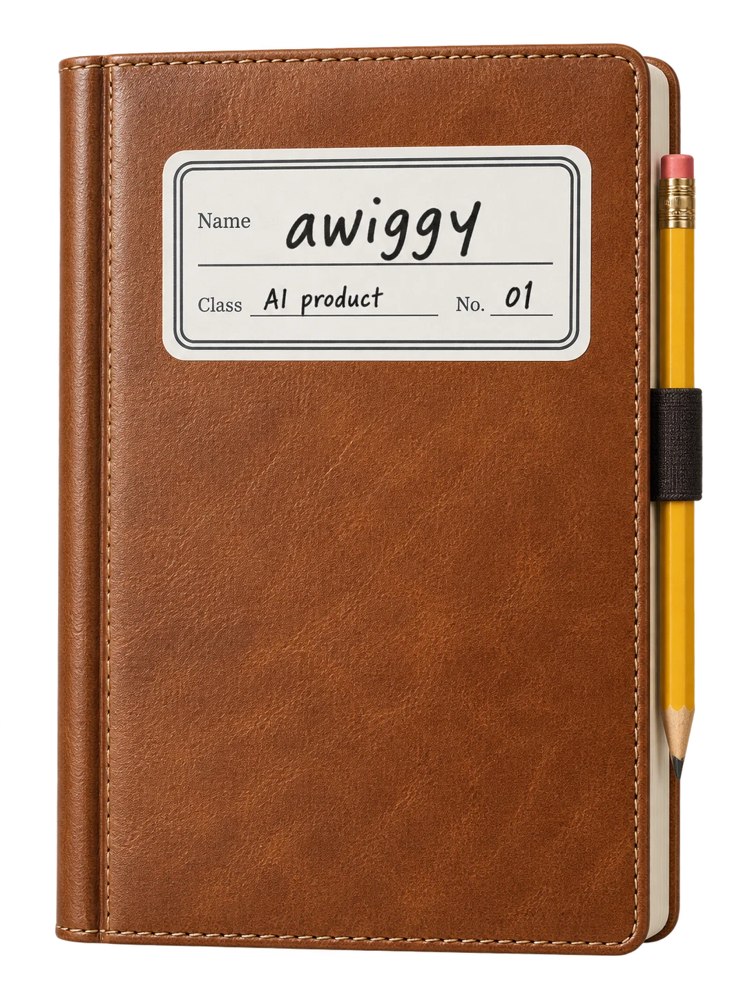
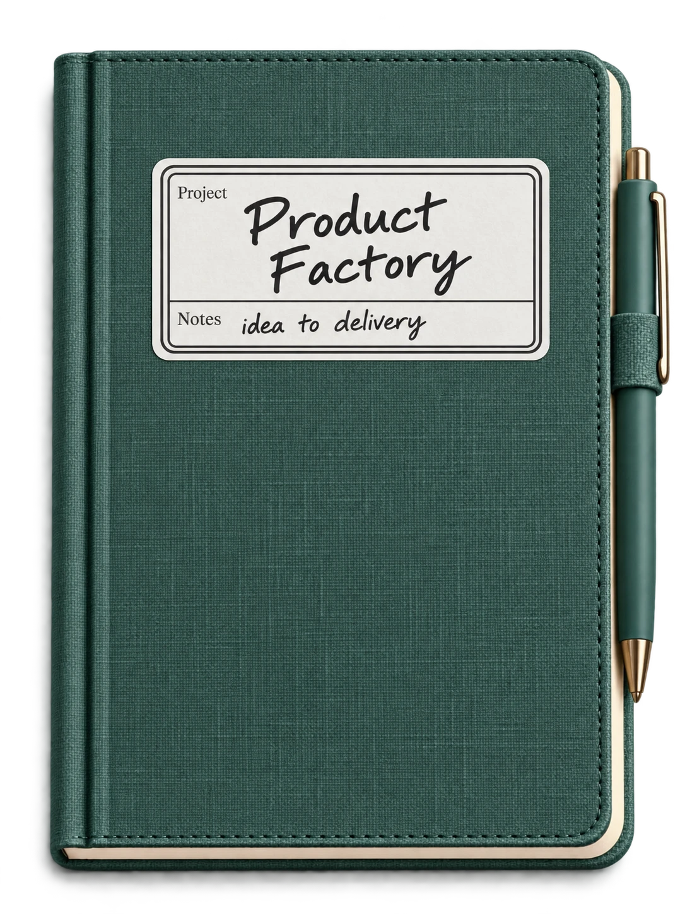
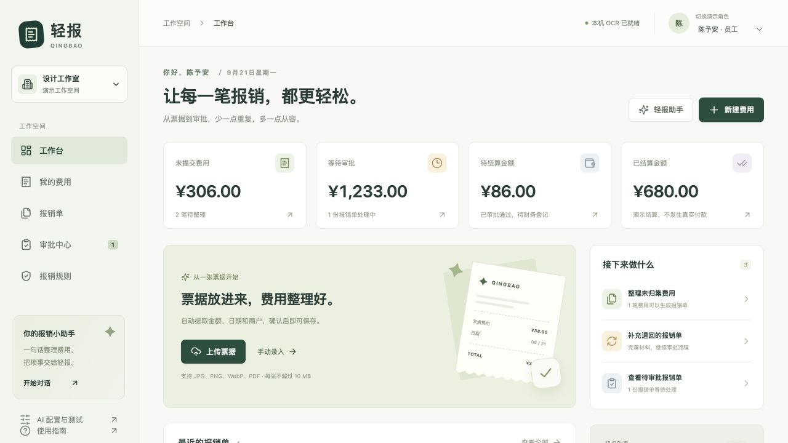
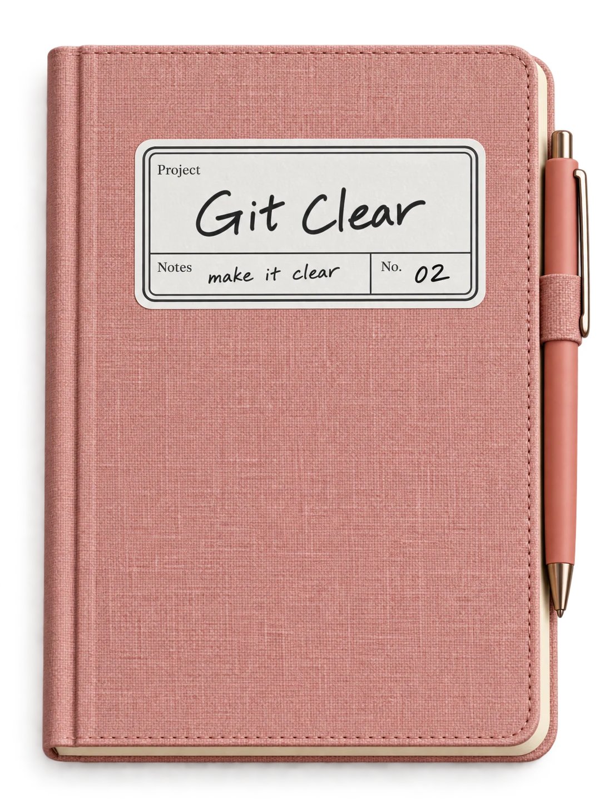
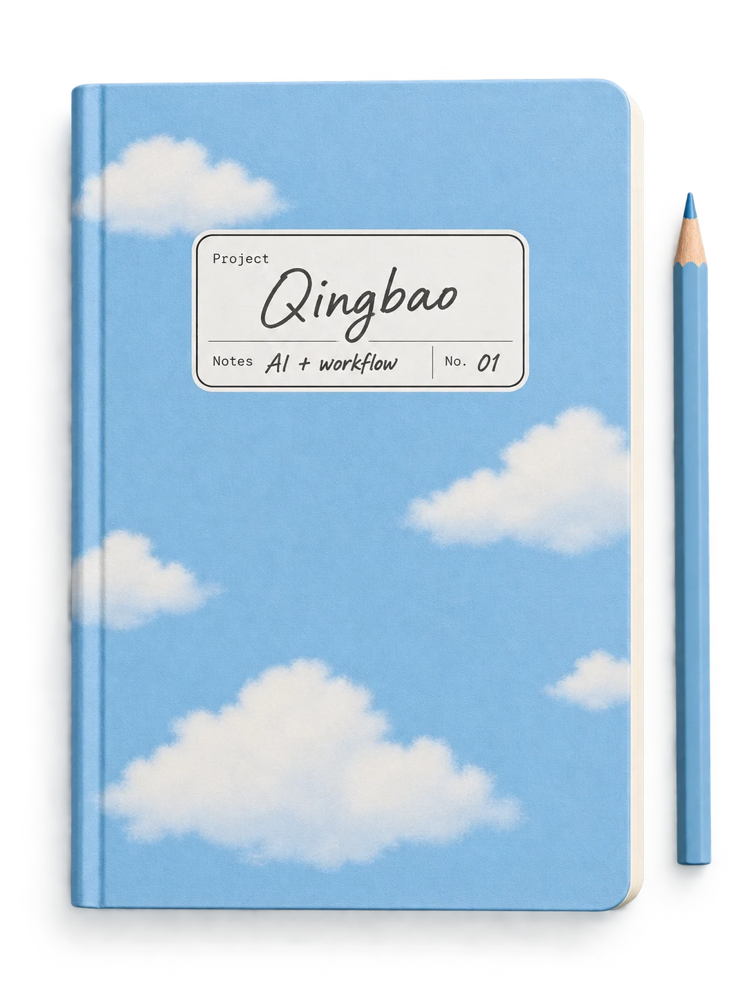

先理解
真实问题
先问为什么，
再决定做什么。

a little about me
关注 Agent、RAG 与评测。
先理解业务里的具体任务，再决定 AI 应该在哪里发挥作用。
用原型检验想法，也把常用的方法留下来。
先问为什么，
再决定做什么。
不止正常路径，
也考虑失败和恢复。
示例、测试与真实效果，
分开记录。
关键操作，
由人确认。
things I've been making
五个场景，五次把想法落地的尝试。
from an idea to a real thing

项目视觉插画 · 下方为实际界面预览，点击放大
产品工厂 Product Factory
从需求、架构、选型，到 MVP、前端、评测、上线与迭代。用本地控制台查看进度、回答问题、检查交付物，知道下一步该做什么。
7 个阶段 Skill 配合状态机，对接本机 Claude Code、Codex CLI 与 pi。模拟测试、真实模型测试与线上验证分开记录，关键验收与部署授权由人确认。
提供不调用 AI 的演示模式；真实产品全流程仍需持续验证。控制台在本机运行，不是一键上线平台，也不会默认代你开云资源或产生费用。

实际运行截图 · TEST 演示数据
make the next step clear

a little room for play!
like making things
认真工作，也保留一点好奇心。

keep it clearlittle helpers, big possibilities
把常用的方法，装进三个小工具箱。
AI Product Delivery Skills
四个独立 Skill，覆盖 Agent 架构规划、业务实现、前端交互与发布检查。按阶段调用，说明输入、输出、验收要求与操作边界。
当前为初版，不是应用脚手架或一键上线工具。
打开交付工具箱 ↗Reverse AI Product
从截图、录屏与交互证据梳理用户流程、Agent 分工和工具调用。区分已知事实与架构推断，形成可追溯的分析。
适合竞品研究与流程分析，不宣称还原产品的真实内部源码。
打开产品拆解 Skill ↗Human Writing
从模糊想法开始，通过观点讨论、材料研究与结构梳理推进写作。也支持直接修改已有文章，打磨内容与表达。
适合观点成文、长文共创与中文表达优化。
打开写作共创 Skill ↗a few things you might wonder
我是张宛瑜，从数据分析走向 AI 产品。关注 Agent 工作流、RAG 知识库与评测，习惯先理解业务任务，再通过需求拆解、原型和验证推进方案。
GAME HUB 可以在线试玩；Git Agent Clear 提供桌面安装包；产品工厂、轻报和 Luma 需要按各自仓库说明在本地运行。产品工厂还提供不调用 AI 的演示模式。各项目的当前状态与待验证部分都在对应仓库标明。
它们是提供给支持 SKILL.md 的 AI 助手的工作指引，不是独立 App。到对应仓库查看适用场景、依赖和使用方法，再按任务选择需要的 Skill。
使用问题可以提交到对应项目的 GitHub Issues。也欢迎从 我的 GitHub 主页 ↗ 找到全部公开仓库。
still learning. still making.
把日常观察变成产品，把实践整理成方法。
下一页，也许就从一次交流开始。